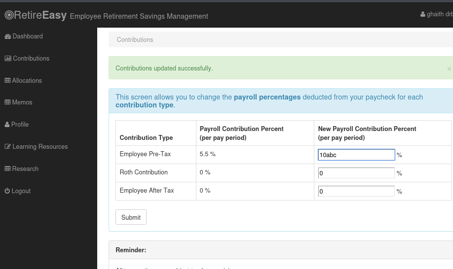
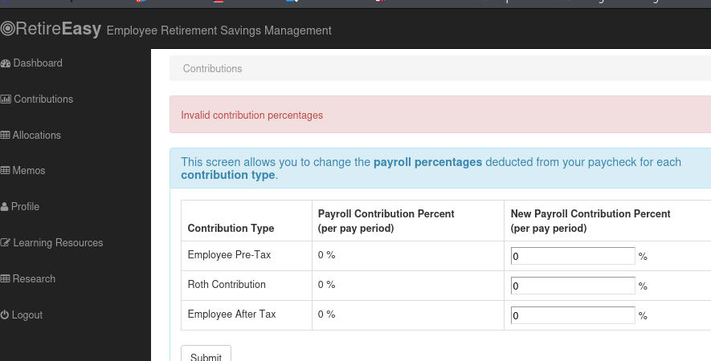
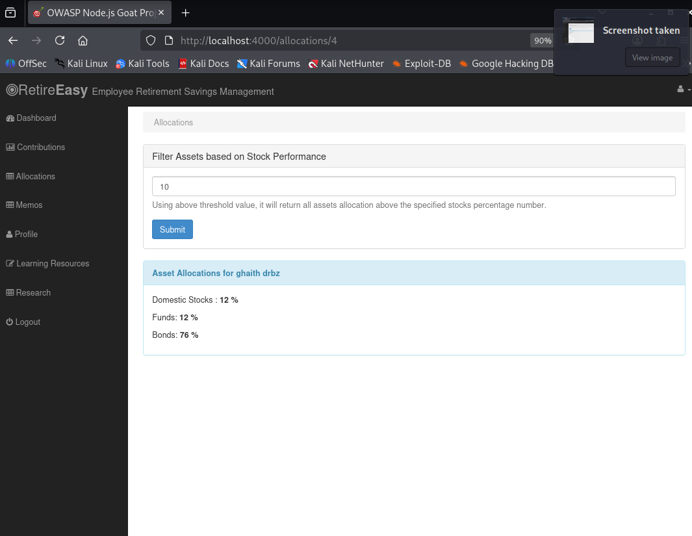
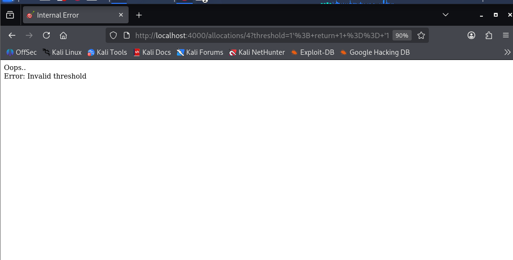
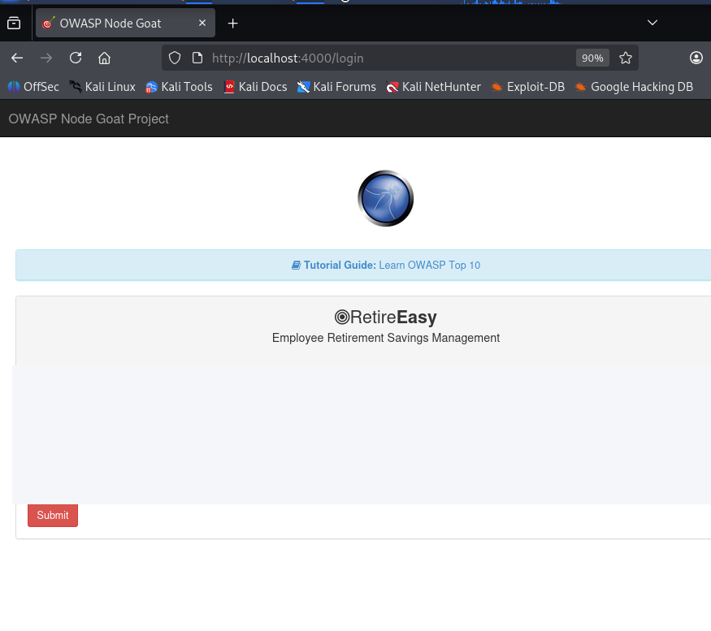
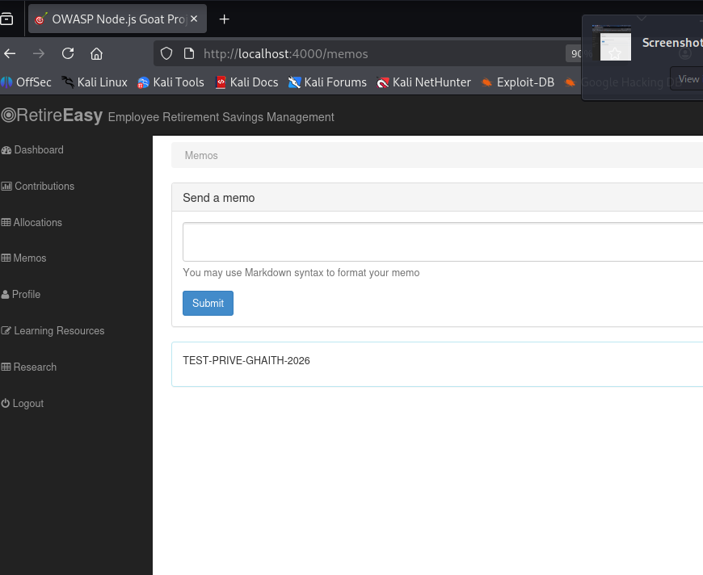
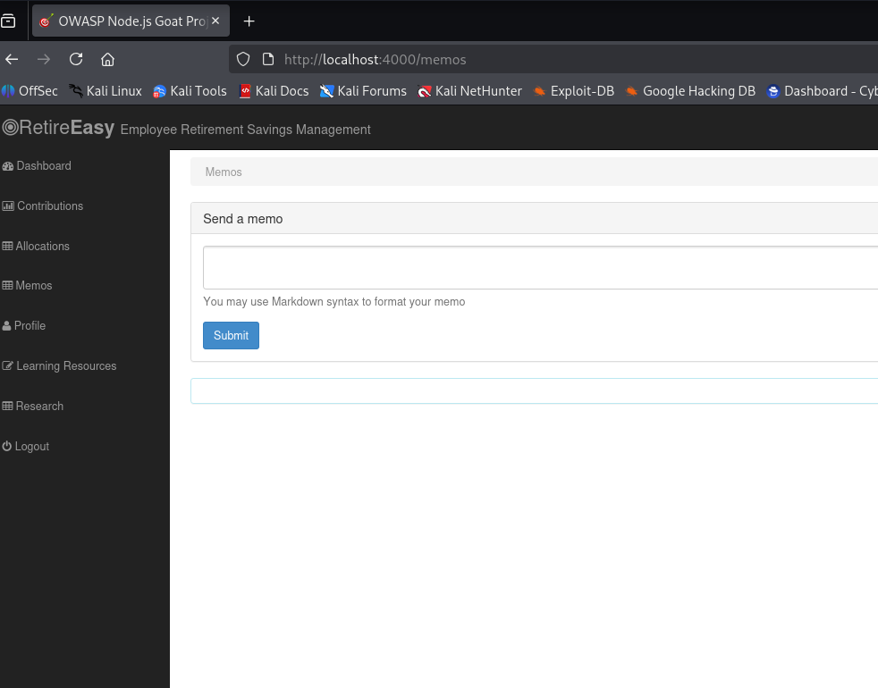
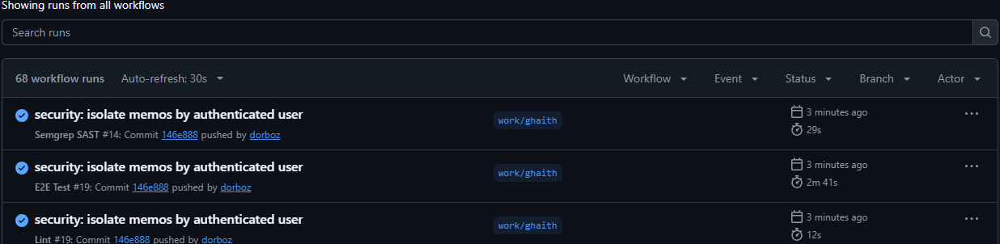

OWASP NodeGoat Analyse STRIDE et pentest BEFORE / AFTER
Contribution individuelle de Ghaith à la sécurisation de l'application, avec preuves du code vulnérable, captures de tests après correction et traçabilité CI/CD.
04
vulnérabilités traitées
06
dimensions STRIDE examinées
03
contrôles CI verts sur Ghaith
Application : OWASP NodeGoat (Node.js / Express / MongoDB) Branche : work/ghaith Environnement : Kali Linux, Docker et instance locale localhost:4000 État documentaire : version de contribution, avant consolidation du rapport de groupe.
Lecture des preuves : les captures actuellement récupérées documentent principalement l'AFTER. Le BEFORE est établi par des extraits de code historiques et des observations rapportées ; aucune capture d'exploitation BEFORE absente n'a été créée artificiellement.
01 / Contexte et frontières de confiance
Architecture et périmètre
Le navigateur envoie des données à Express, qui applique les règles de session et communique avec MongoDB via des DAO. Le périmètre de Ghaith concerne les routes Contributions, Allocations, Benefits et Memos.
Navigateur / utilisateurSaisies, session, navigation, requêtes GET et POST
DAO applicatifs Contributions • Allocations • Benefits • Memos
▼ TB3 : application / base de données ▼
MongoDBComptes, allocations, paramètres et mémos
Actifs à protéger
Actif
Objectif de sécurité
Zone
Identité de session
Empêcher la substitution de compte
TB1
Contributions et allocations
Intégrité des pourcentages et requêtes
TB1–TB3
Avantages (Benefits)
Restreindre les mises à jour à l’admin
TB1–TB2
Mémos
Confidentialité et isolation par propriétaire
TB2–TB3
TB4 (hors diagramme d'exécution) : dépôt Git → GitHub Actions. Les contrôles Lint, Semgrep et Cypress constituent des indices de non-régression, pas des contrôles d'accès en production.
02 / Modélisation des menaces
STRIDE : scénarios et preuves
Chaque scénario est rattaché à un actif et à une frontière de confiance. Les menaces non testées restent hypothétiques, afin de ne pas les présenter comme des résultats de pentest.
ID
STRIDE
Zone
Scénario
État
S-01
S • Spoofing
Session
Usurpation ou réutilisation de session
À étudier ; non démontré
T-01
T • Tampering
Contributions
Donnée interprétée par eval()
V-01 corrigée
T-02
T • Tampering
Allocations
Entrée injectée dans $where
V-02 corrigée
R-01
R • Repudiation
Journalisation
Modification difficile à attribuer
Non évalué
I-01
I • Disclosure
Memos
Lecture d’un mémo d’un autre compte
V-04 corrigée
D-01
D • DoS
MongoDB
JavaScript coûteux via $where
Risque hypothétique réduit
E-01
E • Elevation
Benefits
Compte standard utilise une fonction admin
V-03 corrigée ; POST à vérifier
Réponse par type de menace
Contrôles implémentés
Décimaux validés sans exécution de code.
Requête MongoDB avec opérateur $gt.
Middleware de rôle isAdmin.
Requête Memos liée au userId de session.
Contrôles à compléter
Vérification POST Benefits en situation non admin.
Audit de la journalisation et de la rotation des sessions.
Traitement des mémos historiques orphelins.
Preuves originales BEFORE à compléter si disponibles.
Interprétation : STRIDE est une grille de menaces (usurpation, altération, répudiation, divulgation, déni de service, élévation). Elle n'équivaut pas à six vulnérabilités observées.
03 / Registre des risques
Vulnérabilités et catégories OWASP
ID
Composant
OWASP Top 10 (2021)
Correction
Priorité*
V-01
Contributions
A03:2021 Injection
Suppression de eval()
Élevée
V-02
Allocations
A03:2021 Injection
Requête structurée $gt
Élevée
V-03
Benefits
A01:2021 Broken Access Control
Middleware isAdmin
Élevée
V-04
Memos
A01:2021 Broken Access Control
Filtrage userId
Modérée / élevée
* Priorités qualitatives, non CVSS : elles servent à ordonner les vérifications, sans scoring quantitatif.
Correspondance des failles avec les objectifs de sécurité
Intégrité : V-01 et V-02 éliminent l'interprétation de données non fiables comme du code côté serveur ou dans des requêtes MongoDB.
Autorisation : V-03 impose le rôle administrateur à l'entrée des routes Benefits.
Confidentialité : V-04 limite le périmètre de lecture au propriétaire des mémos.
Écart aux critères académiques : quatre problèmes sont corrigés, mais ils se répartissent ici en deux catégories OWASP démontrées (A01 et A03). Le cahier des charges exige au moins trois catégories distinctes. Une troisième catégorie doit être documentée et prouvée au niveau du groupe (ex. composants vulnérables, si le diagnostic et la remédiation Trivy sont établis).
Cause : l'entrée utilisateur était interprétée en JavaScript dans Contributions. Impact : possibilité de faire évaluer des expressions non prévues par la logique métier. Correction : validation stricte de valeurs décimales et suppression de eval().
AFTER · preuves d'exécution locale

Saisie non numérique 10abc dans le formulaire, avant Submit.

Après soumission : Invalid contribution percentages.
Résultat : six tests de validation automatisés réussis ; entrées de test invalides rejetées, valeurs numériques valides toujours traitées. Le contrôle fonctionne sur les cas soumis, pas une preuve d'absence de toute injection.
Traçabilité BEFORE :git show 67964ff^:app/routes/contributions.js. Les captures fournies pour cette section sont AFTER ; ne pas les présenter comme des captures de l'exploitation initiale.
Cause : interpolation d'une entrée dans une expression JavaScript MongoDB. Correction : rejet des seuils invalides et construction de stocks: { $gt: Number(threshold) } sans JavaScript dynamique.
AFTER · scénario légitime et entrée hostile

Seuil 10, consultation des allocations fonctionnelle.

Chaîne JavaScript rejetée : Invalid threshold.
Résultats : 9/9 tests automatisés réussis ; seuils 0 et 10 acceptés, seuil 100 et expressions injectées rejetés. L'exécution réelle sur MongoDB a été observée via l'interface.
Limite ergonomique : l'application affiche une page d'erreur générique pour un seuil invalide. Recommandation : réponse HTTP 400 contrôlée et message de formulaire non sensible.
Cause : une session valide suffisait pour accéder à l'interface et aux opérations administrateur. Correction : middleware isAdmin ajouté à GET et POST. Commits :b2010fc (code), c537f70 (test).
AFTER · refus d'accès à la page

Tentative de navigation vers /benefits : retour sur la page /login (formulaire anonymisé).
Résultat : GET non administrateur refusé avec redirection vers /login. Le test E2E ancien, qui autorisait le compte standard, a été corrigé et la suite E2E a ensuite réussi.
Couverture partielle : le POST est protégé dans le code, mais le test spécifique d'un POST non administrateur et l'absence de modification MongoDB n'ont pas été démontrés séparément.
const memos = { memo, timestamp: new Date() };
memosCol.find({});
Cause : absence de userId dans les documents et lecture sans filtre. Correction : sauvegarde du userId de session puis interrogation par find({ userId }). Ces règles s'appliquent si les mémos sont destinés à être personnels.
AFTER · comparaison intercomptes

Compte A : le mémo de test est visible.

Compte B : le mémo de test n’apparaît pas.
Résultat : le mémo TEST-PRIVE-GHAITH-2026 est visible pour A, absent pour B. Le workflow E2E reste vert sur 146e888.
Risque de migration : les anciens mémos sans propriétaire restent stockés mais sont exclus du nouveau filtre. Prévoir une politique de récupération ou d'archivage avant la mise en production.
08 / Non-régression et CI
Validation des corrections
Le dernier commit de sécurité 146e888, intitulé « security: isolate memos by authenticated user », a déclenché trois workflows réussis sur work/ghaith.

GitHub Actions : Semgrep SAST, E2E et Lint réussis après la correction Memos.
Contrôle
Observation
Limite
Lint
PASS
Ne valide pas l’absence de vulnérabilité
Semgrep SAST
PASS
Règles et configuration déterminent la couverture
Cypress E2E
PASS
Couvre les scénarios écrits, pas tous les abus possibles
Historique de correction de tests
Après ajout de isAdmin, un test Benefits continuait de réclamer l'ancien accès non autorisé. Ce test a été ajusté pour attendre une redirection vers /login, sans retirer la protection. Le pipeline E2E est alors devenu vert.
Coordination : les workflows Trivy, Gitleaks et Syft vus sur work/moetaz appartiennent à une branche distincte. Leur présence ne prouve pas qu'ils ont exécuté le commit de Ghaith ; la vérification consolidée doit se faire après intégration.
09 / Conclusion et contribution
Résultats, limites, prochaines preuves
Commit
Contribution Ghaith
67964ff
Protection Contributions et tests de validation
9b20b48
NoSQL Allocations et tests de filtres
b2010fc
Rôle administrateur Benefits GET/POST
c537f70
Adaptation du test E2E Benefits
146e888
Isolation des mémos par utilisateur
Éléments à compléter avant la remise académique
Troisième catégorie OWASP : deux catégories actuellement démontrées dans ce périmètre (A01, A03), exigence de trois au niveau du groupe.
Preuves BEFORE : reconstruire à partir du Git historique et compléter avec vraies captures anciennes si elles existent ; ne pas fabriquer d'écran d'attaque.
Benefits : essai de POST non admin, contrôle de l'absence de modification MongoDB.
Dossier groupe : intégrer Security Gate bloquant, SBOM/Trivy, Docker/Kubernetes, DAST, journaux et plan d'incident.
Confidentialité : relire les captures avant mise en ligne et ne publier aucun secret.
Références documentaires : cahier des charges DevSecOps ING-5-SSIR fourni ; code OWASP NodeGoat ; captures de la conversation (inventaire CSV et SHA-256) ; classification OWASP Top 10 (2021). Toute utilisation d'IA doit être déclarée et relue conformément au cahier des charges.